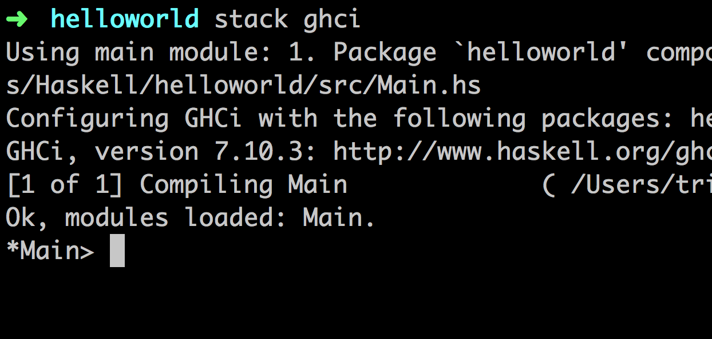

Haskell 与函数式编程
本标题纯属虚构 如有雷同纯属巧合

https://bakatest.github.io/simple-naive-haskell-introduction
本标题纯属虚构 如有雷同纯属巧合
简单介绍一下函数式编程和 Haskell 的特性以及一些简单的使用经验，需要有一定的编程经验。 最好准备一个可以使用的 GHCi。
Homebrew 用户可以使用 brew install haskell-stack 安装 Haskell Stack 后使用
stack new helloworld new-template 创建 helloworld 工程，
通过 stack ghci 打开 GHCi。
(请参考 Haskell Stack 文档)
大量材料来自 @cafe2code 在清华 Haskell 线下会上的分享内容。
| Procedual (Imperative) | Functional (Declaritive) |
|---|---|
|
|
In computer science, functional programming is a programming paradigm — a style of building the structure and elements of computer programs—that treats computation as the evaluation of mathematical functions and avoids changing-state and mutable data.
许多现代语言诸如 C#、Scala 引入了函数式特性，C++11 也引入了 Lambda 语法支持函数式特性。
Java 8 的 Lambda 表达式:
Runnable r = () -> System.out.println("Java 8.")Runnable r = new Runnable() { // In Java 7public void run() {System.out.println("Too verbose!");}}
| Mutable State | Immutable State |
|---|---|
|
|
| Mutable State | Immutable State |
|---|---|
|
|
使用常用的术语解释：函数可以作为参数传递、函数不产生副作用以及惰性求值。
<expression> ::= <variable>| λ <variable> . <expression>| <expression> <expression>
三个例子:
三个例子:
将 (λx.<left>) <right> 形式的表达式
<left>中自由出现的 x 重写为
<right> (规约顺序不定)
例子:
会得到什么结果？
我们需要函数接受多个参数的时候……
var add = (a, b) => a + b
可以改写成为下面的形式
var add = (a) => (b) => a + b
这一做法以 Haskell Curry 命名，称为柯里化 (Currying)
Haskell 的 REPL 界面
Haskell 是静态类型的函数式语言。那有什么好处呢？
使用 GHCi :type 命令:
:: 读作「has type of」，=> 表示 class constraint
列表是十分重要的数据结构。Haskell 中可以这样构造一个列表:
let l = [ 1, 2, 3, 4, 5 ]let l = [ 2, 1..20 ]let l = [ 2.. ]let l = 1:2:3:5:7:[]let l = [ x*2 | x <- [1..100], x `mod` 3 == 0 ]
let 是 GHCi 的语法糖，在 hs 模块中直接使用 x = ? 即可。
这些运算同样也可以应用在字符串上，还记得字符串是什么类型么？
Haskell 的模式匹配可不知比 Python/C#/ES6 高到哪里去了。
factorial :: (Integral a) => a -> afactorial 0 = 1factorial n = n * factorial (n - 1)
匹配顺序从上往下。
列表和元组当然也可以
let xs = [(1,3), (4,3), (2,4), (5,3), (5,6), (3,1)]let xs = [a+b | (a,b) <- xs]let x:xs = [1,2,3,5,7]
一个无限长的素数数列
primes = filterPrime [2..]where filterPrime (p:xs) =p : filterPrime [x | x <- xs, x `mod` p /= 0]
takeWhile (<100) primes 取出小于 100 的素数
primes = filterPrime [2..]where filterPrime (p:xs) =p : filterPrime [x | x <- xs, x `mod` p /= 0]
自函子说穿了就是把一个范畴映射到自身的函子， 自函子范畴说穿了就是从小范畴映射到自身的函子所构成的以自函子为对象以自然变换为态射的范畴， 幺半群说穿了就是只有单个对象的范畴，给定了一个幺半群则可构造出一个仅有单个对象的小范畴使其态射由幺半群的元素给出而合成由幺半群的运算给出， 而单子说穿了就是自函子范畴上的这样一个幺半群。 这都不理解么亲连这种最基本的概念都不理解还学什么编程！
class Applicative m => Monad (m :: * -> *) where(>>=) :: m a -> (a -> m b) -> m b(>>) :: m a -> m b -> m breturn :: a -> m afail :: String -> m a-- Defined in ‘GHC.Base’
对 CPS 代码进行 Currying 我们可以得到与 (>>=) 操作符等价的定义。
不难发现 Monad 和 CPS 变换是同构的。
(>>=) :: m a -> (a -> m b) -> m b
readFile :: FilePath -> IO [Char]writeFile :: FilePath -> String -> IO ()main = dos <- readFile "test.txt"writeFile "test.txt" ("23333" ++ s)